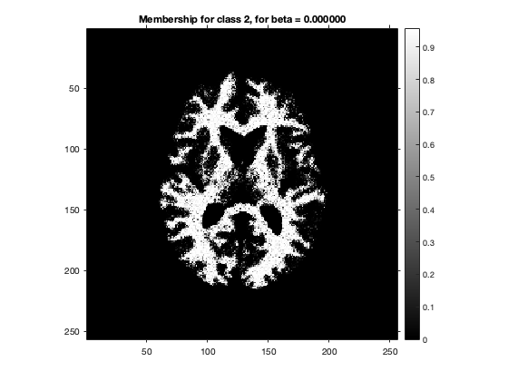

Contents
Visualizing the data
data = load('../data/assignmentSegmentBrainGmmEmMrf.mat'); im = data.imageData; mask = data.imageMask; printImage(im.*mask,'Masked corrupted image - y');
Initialisation using k-means
K = 3; y = im(logical(mask)); y_uniq = unique(y); mu_idx = randperm(length(y_uniq),K); mu = reshape(y_uniq(mu_idx),1,K); [mu,~] = kmeansClustering(y,mu,eps); [d,x] = min(((y-mu).^2),[],2); sigma = zeros(1,1,K); for k=1:K sigma(k) = sqrt(sum(d(x==k))/sum(x==k)); end mu = reshape(mu,1,1,K); y = im; y(~mask) = 0; [~,x] = min(((y-mu).^2).*mask,[],3); printImage(label2rgb(x).*uint8(mask), 'Initial Labels'); x(~mask) = 0; fprintf('Initial class means = %f %f %f\n',mu); fprintf('Initial class standard deviations = %f %f %f\n',sigma);
Initial class means = 0.270111 0.628841 0.505419 Initial class standard deviations = 0.077485 0.036704 0.044198
This initialization is given by kmeans clustering on masked image. Motivation for this is that kmeans is a natural and efficient algorithm for image segmentation. This gives reasonable initial labels for EM and sufficiently far apart initial means (but which are close to optimal means). The the class standard deviations are calculated using ML estimate which reduces to the emperical standard deviations in data. This is because ML estimate for standard deviation in a Gaussian distribution is same as the emperical standard deviation.
Segmentation
printImage(im, 'Corrupted Image'); printImage(im.*mask, 'Masked Corrupted Image'); % Masks for determining valid neighbourhood of a pixel nbMask = zeros([size(mask),4]); for dim=[1,2] for k=[-1,1] nbMask(:,:,dim+k+1) = circshift(mask,k,dim); end end nbMask = nbMask.*mask; mask = repmat(mask,[1,1,K]); choosen_beta = 1.18; fprintf('Choosen value for beta = %f\n',choosen_beta); % Hyperparameter beta for smoothness of segmentation for beta=[0,choosen_beta] fprintf('beta = %f\n',beta); % Function handle to compute MRF prior image priorFn = @(x) calculatePrior(x,nbMask,beta,K); % Function handle to compute posterior image posteriorFn = @(y,mu,sigma,x,cx) calculatePosterior(y,mu,sigma,x,cx,priorFn,mask); % EM eps = 1e-7; [gamma,x,mu,sigma] = emSegmentation(y,mu,sigma,x,posteriorFn,mask,eps); printImage(gamma, sprintf('Class membership image estimate for beta = %f',beta)); for k=1:K printImage(gamma(:,:,k), sprintf('Membership for class %d, for beta = %f',k,beta)); end printImage((label2rgb(x).*uint8(mask)), sprintf('Optimal label image estimate for beta = %f',beta)); end fprintf('Optimal class means (for beta = %f) = %f %f %f\n',choosen_beta,mu);
Choosen value for beta = 1.180000 beta = 0.000000 ICM update - Log posterior probability: -2475.334875 --> -2074.264903 ICM update - Log posterior probability: -2715.171585 --> -2561.684164 ICM update - Log posterior probability: -2964.812413 --> -2873.614498 ICM update - Log posterior probability: -3177.415468 --> -3124.135975 ICM update - Log posterior probability: -3383.119989 --> -3350.645807 ICM update - Log posterior probability: -3565.378728 --> -3542.580047 ICM update - Log posterior probability: -3712.368828 --> -3701.018090 ICM update - Log posterior probability: -3829.483217 --> -3822.924631 ICM update - Log posterior probability: -3912.636310 --> -3909.408894 ICM update - Log posterior probability: -3969.628842 --> -3968.115625 ICM update - Log posterior probability: -4006.940447 --> -4005.908777 ICM update - Log posterior probability: -4029.790101 --> -4029.272117 ICM update - Log posterior probability: -4043.803126 --> -4043.426974 ICM update - Log posterior probability: -4052.052820 --> -4051.756458 ICM update - Log posterior probability: -4056.729655 --> -4056.606717 ICM update - Log posterior probability: -4059.519616 --> -4059.444264 beta = 1.180000 ICM update - Log posterior probability: -4671.761667 --> -957.839179 ICM update - Log posterior probability: -1871.329097 --> -829.636876 ICM update - Log posterior probability: -1811.353301 --> -798.240561 ICM update - Log posterior probability: -1533.704710 --> -790.229455 ICM update - Log posterior probability: -1579.207982 --> -784.769313 ICM update - Log posterior probability: -1516.307304 --> -786.019871 ICM update - Log posterior probability: -1511.299002 --> -784.840295 Optimal class means (for beta = 1.180000) = 0.310309 0.635586 0.527966